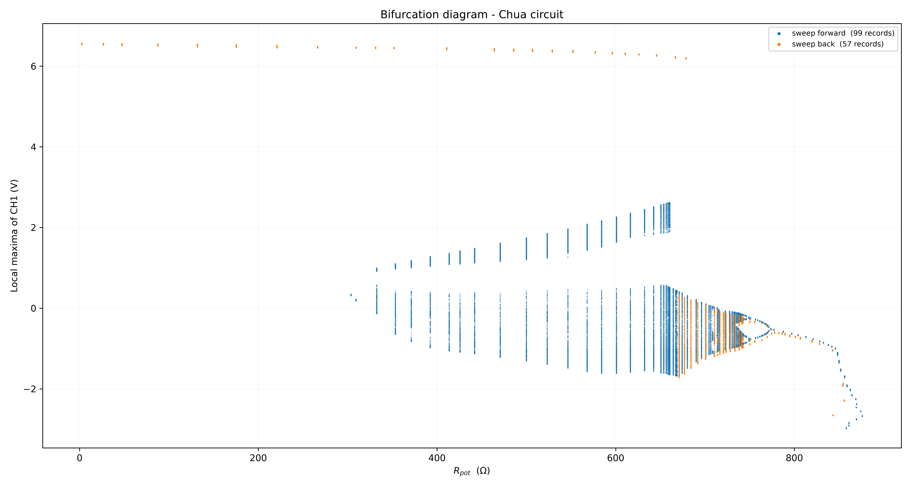
chua/hysteresis_bifurcation.png
Bifurcation · 6300 × 3375All original figures were regenerated. Click a figure to inspect its full resolution.
Raw measurements are preserved. Offset removal is a model assumption; the record labelled “double-scroll end” is nearly periodic.
Verification report · Three-record numerical results · Figure manifest

chua/hysteresis_bifurcation.png
Bifurcation · 6300 × 3375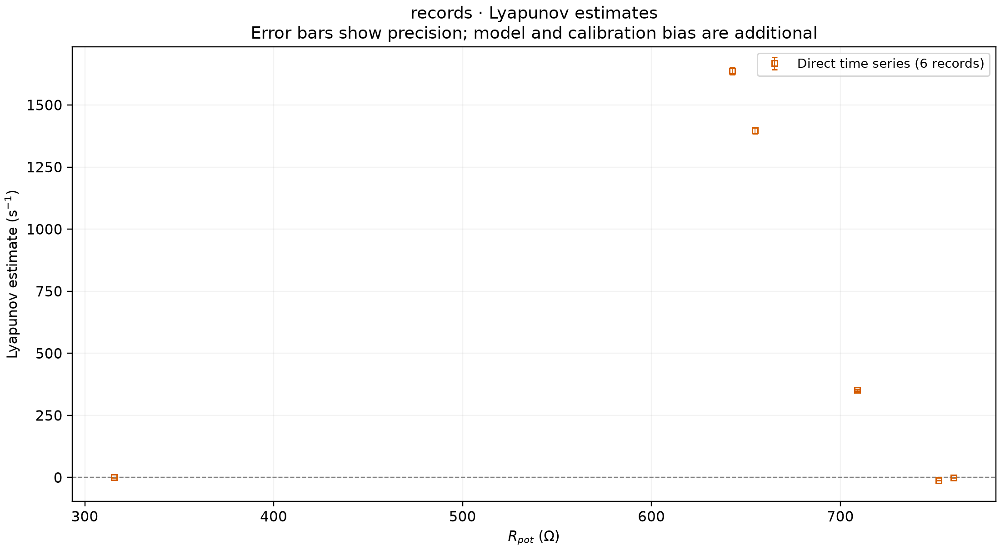
chua/records_lyapunov.png
Lyapunov · 2200 × 1210
chua/records_lyapunov_each/chaos - 716.9 ohm.png
Lyapunov · 2310 × 616
chua/records_lyapunov_each/doublescroll 2 - 656.7ohm.png
Lyapunov · 2310 × 616
chua/records_lyapunov_each/doublescroll end - 316.1ohm.png
Lyapunov · 2310 × 616
chua/records_lyapunov_each/doublescroll start - 666.0 ohm.png
Lyapunov · 2310 × 616
chua/records_lyapunov_each/limitcycle1 - 773.0 ohm.png
Lyapunov · 2310 × 616
chua/records_lyapunov_each/limitcycle2 - 764.6 ohm.png
Lyapunov · 2310 × 616
chua/set 2/hysteresis_bifurcation.png
Bifurcation · 6300 × 3375
chua/set 2/sweep back_bifurcation.png
Bifurcation · 6300 × 3375
chua/set 2/sweep back_lorenz/lorenz_grid_01.png
Return maps · 3024 × 2016
chua/set 2/sweep back_lorenz/lorenz_grid_02.png
Return maps · 3024 × 2016
chua/set 2/sweep back_lorenz/lorenz_grid_03.png
Return maps · 3024 × 2016
chua/set 2/sweep back_lyapunov.png
Lyapunov · 2200 × 1210
chua/set 2/sweep forward_bifurcation.png
Bifurcation · 6300 × 3375
chua/set 2/sweep forward_lorenz/lorenz_grid_01.png
Return maps · 3024 × 2016
chua/set 2/sweep forward_lorenz/lorenz_grid_02.png
Return maps · 3024 × 2016
chua/set 2/sweep forward_lorenz/lorenz_grid_03.png
Return maps · 3024 × 2016
chua/set 2/sweep forward_lorenz/lorenz_grid_04.png
Return maps · 3024 × 2016
chua/set 2/sweep forward_lorenz/lorenz_grid_05.png
Return maps · 3024 × 2016
chua/set 2/sweep forward_lorenz/lorenz_grid_06.png
Return maps · 3024 × 2016
chua/set 2/sweep forward_lorenz/lorenz_grid_07.png
Return maps · 3024 × 2016
chua/set 2/sweep forward_lorenz/lorenz_grid_08.png
Return maps · 3024 × 2016
chua/set 2/sweep forward_lorenz/lorenz_grid_09.png
Return maps · 3024 × 2016
chua/set 2/sweep forward_lorenz/lorenz_grid_10.png
Return maps · 3024 × 2016
chua/set 2/sweep forward_lyapunov.png
Lyapunov · 2200 × 1210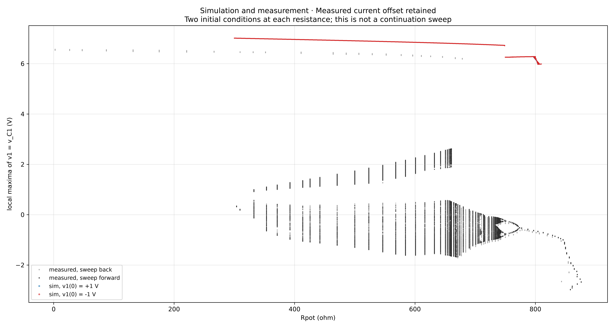
chua/simulated_bifurcation.png
Simulation · 6300 × 3375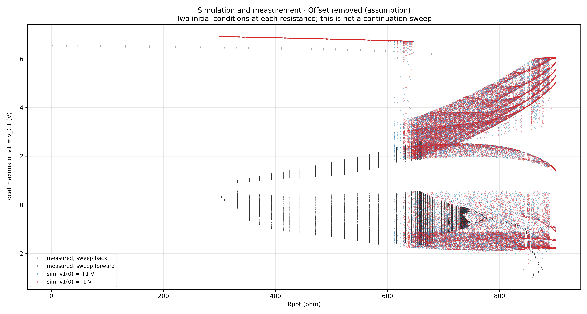
chua/simulated_bifurcation_corrected.png
Simulation · 6300 × 3375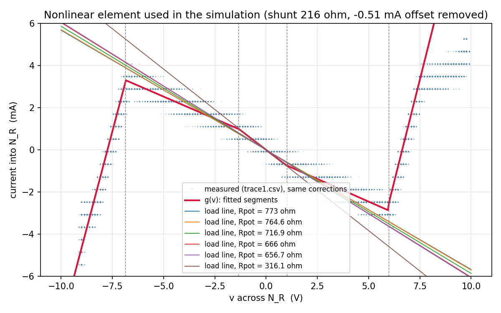
chua/simulated_nr.png
Simulation · 1200 × 750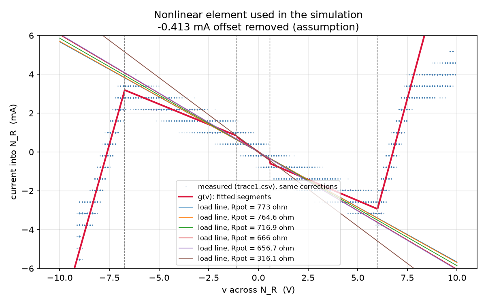
chua/simulated_nr_corrected.png
Simulation · 1200 × 750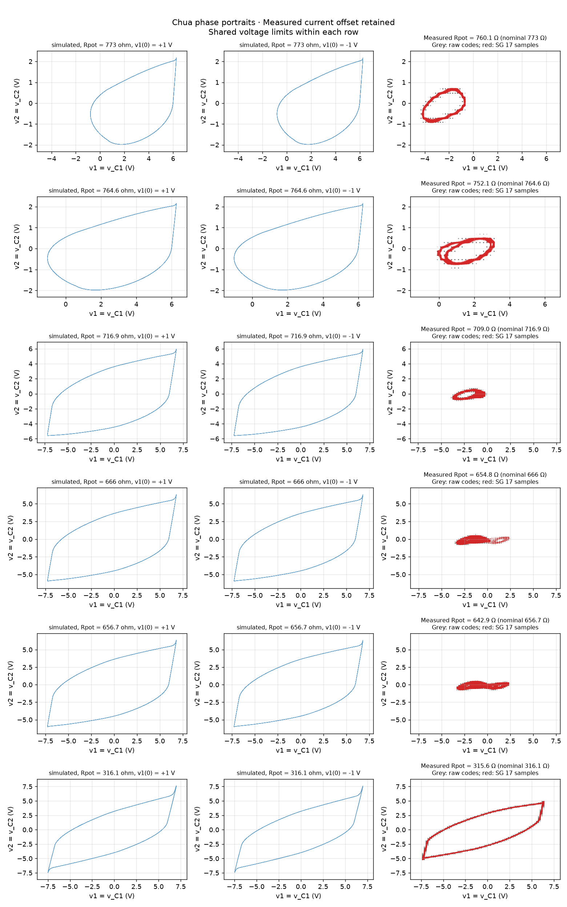
chua/simulated_portraits.png
Simulation · 1560 × 2496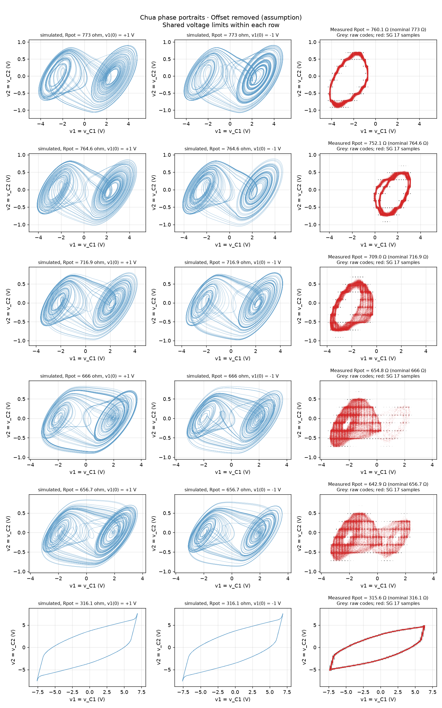
chua/simulated_portraits_corrected.png
Simulation · 1560 × 2496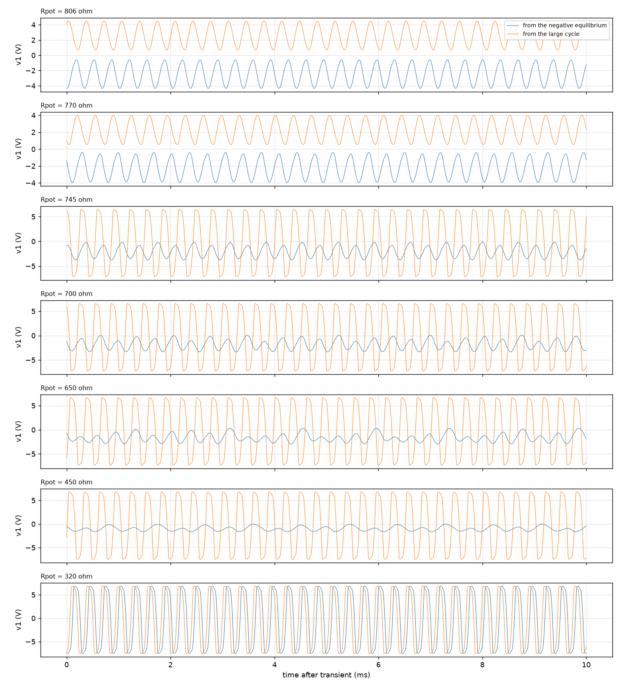
chua/simulated_timeseries.png
Simulation · 1560 × 1482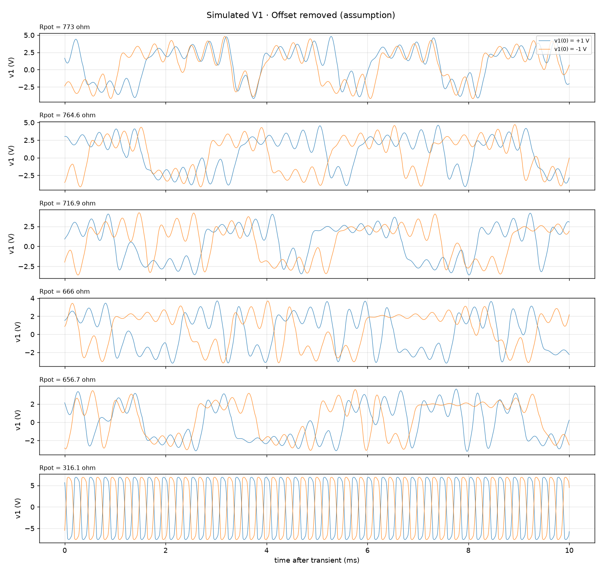
chua/simulated_timeseries_corrected.png
Simulation · 1560 × 1482
chua/sweep back_bifurcation.png
Bifurcation · 6300 × 3375
chua/sweep back_lorenz/lorenz_grid_01.png
Return maps · 3024 × 2016
chua/sweep back_lorenz/lorenz_grid_02.png
Return maps · 3024 × 2016
chua/sweep back_lorenz/lorenz_grid_03.png
Return maps · 3024 × 2016
chua/sweep back_lyapunov.png
Lyapunov · 2200 × 1210
chua/sweep forward_bifurcation.png
Bifurcation · 6300 × 3375
chua/sweep forward_lorenz/lorenz_grid_01.png
Return maps · 3024 × 2016
chua/sweep forward_lorenz/lorenz_grid_02.png
Return maps · 3024 × 2016
chua/sweep forward_lorenz/lorenz_grid_03.png
Return maps · 3024 × 2016
chua/sweep forward_lorenz/lorenz_grid_04.png
Return maps · 3024 × 2016
chua/sweep forward_lorenz/lorenz_grid_05.png
Return maps · 3024 × 2016
chua/sweep forward_lyapunov.png
Lyapunov · 2200 × 1210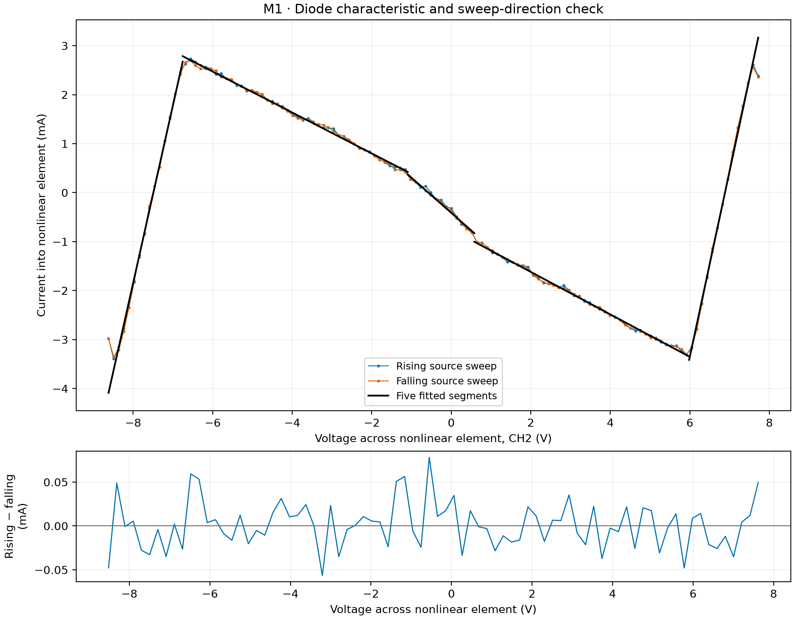
current_vs_voltage.png
Current–voltage · 2000 × 1560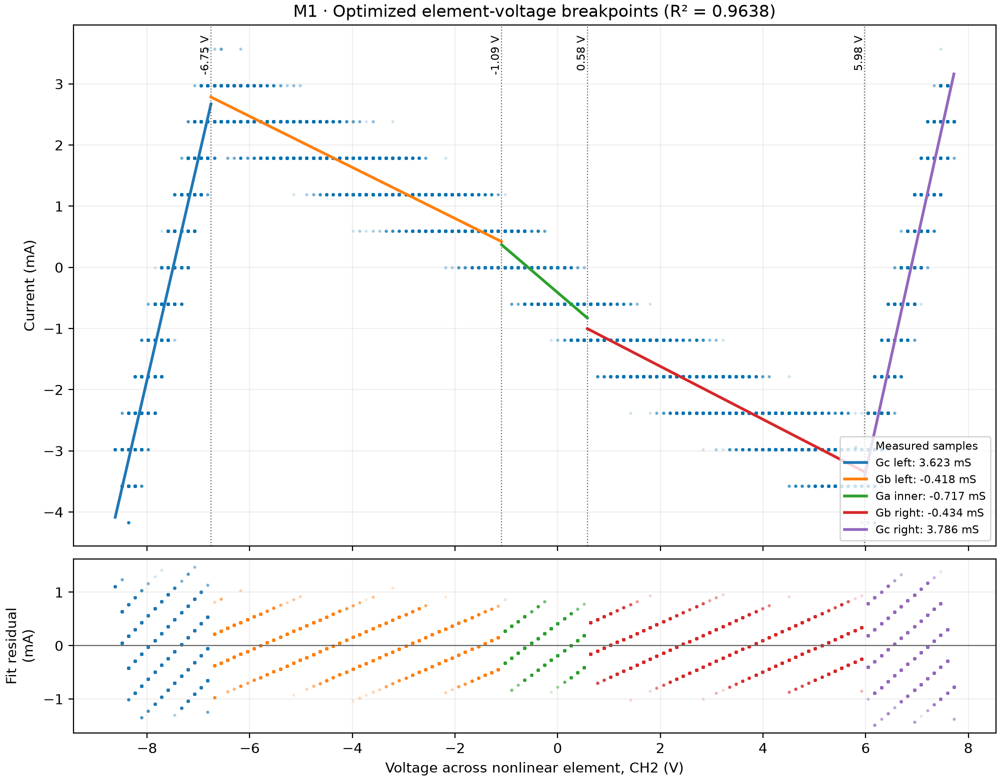
optimized_breakpoints.png
Current–voltage · 2000 × 1560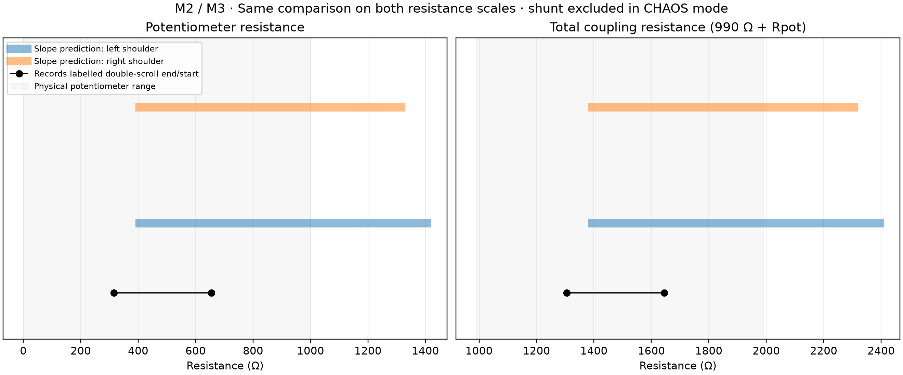
verification/M2_M3_resistance_comparison.png
Requirements · 2640 × 1100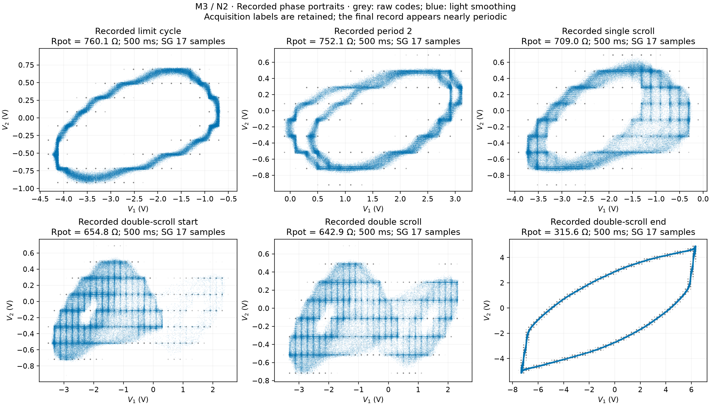
verification/M3_phase_portraits.png
Requirements · 3080 × 1760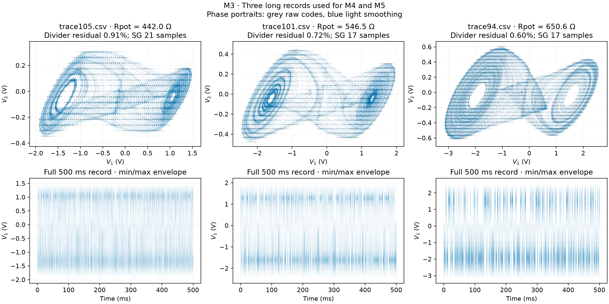
verification/M3_selected_records.png
Requirements · 3080 × 1540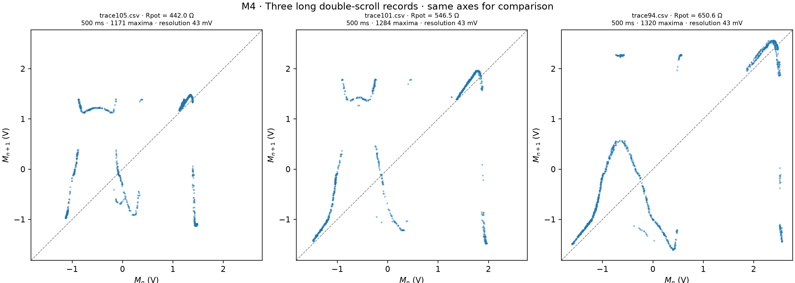
verification/M4_return_maps.png
Requirements · 3080 × 1100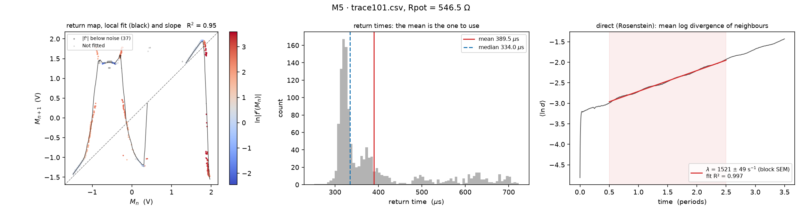
verification/trace101_M5.png
Requirements · 2310 × 616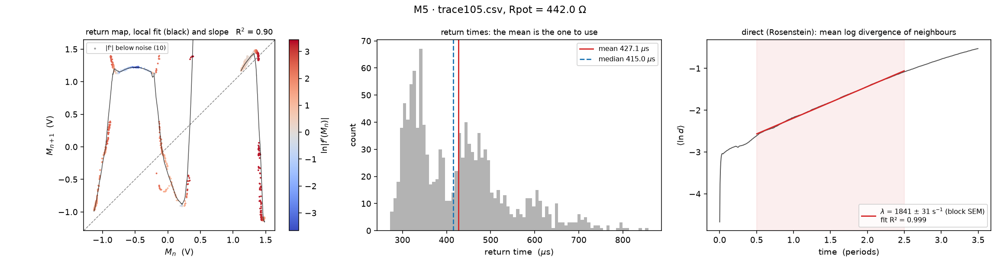
verification/trace105_M5.png
Requirements · 2310 × 616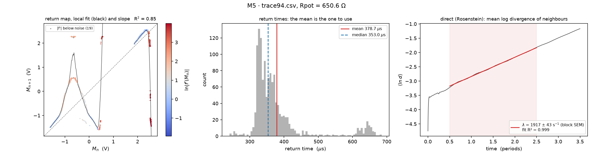
verification/trace94_M5.png
Requirements · 2310 × 616